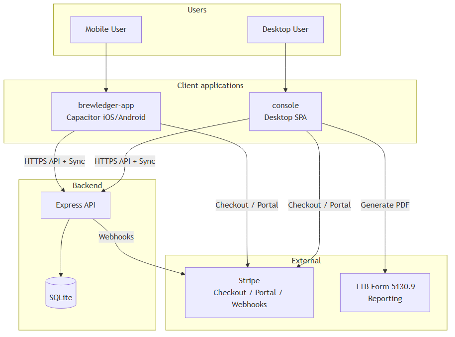
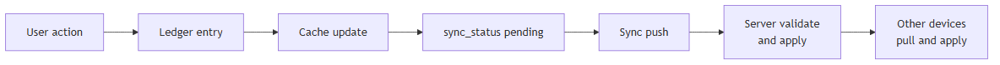
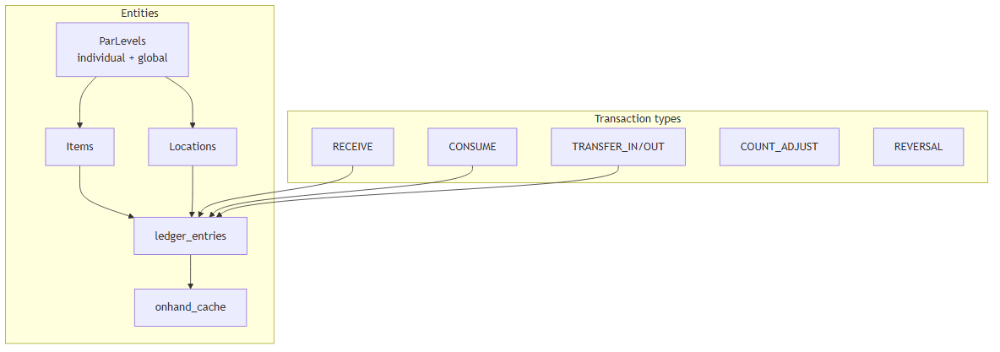
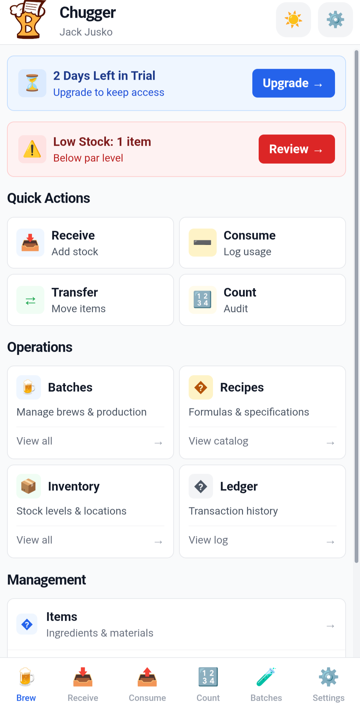
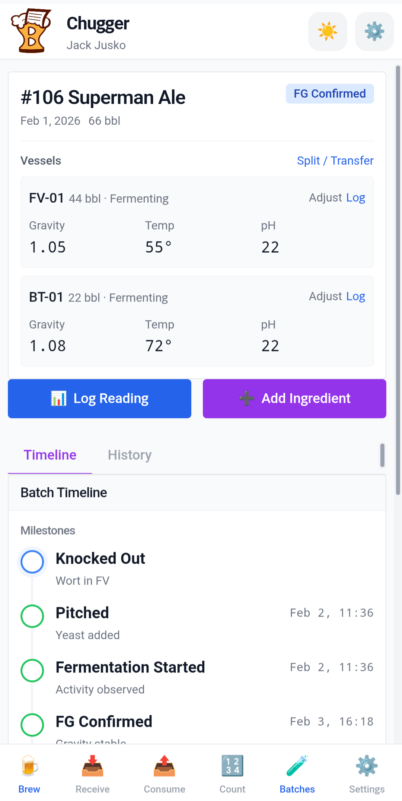
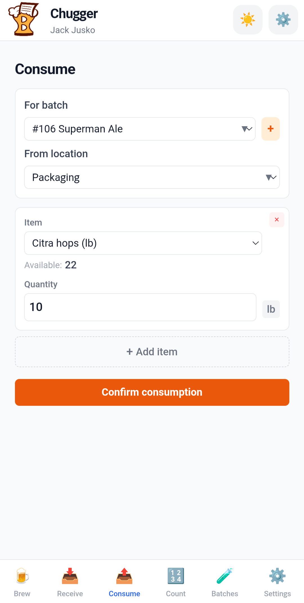
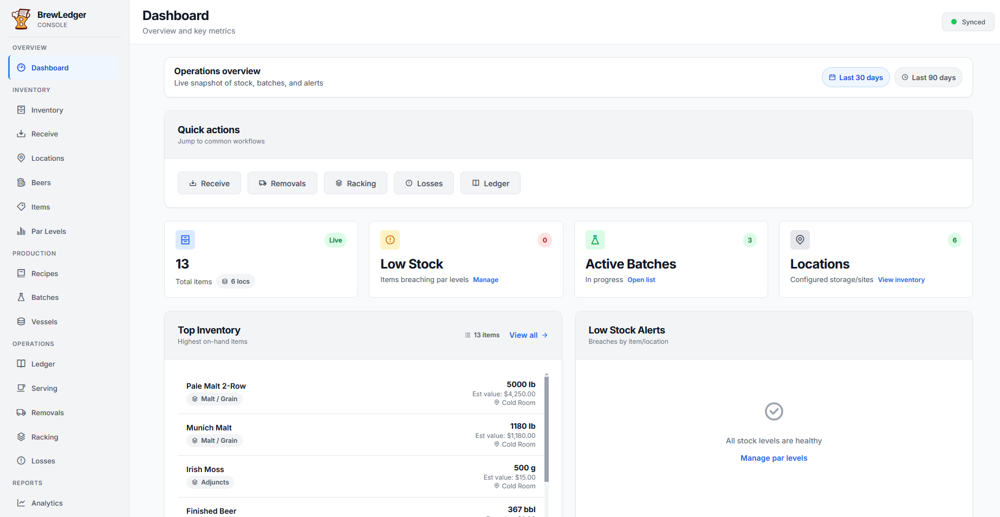
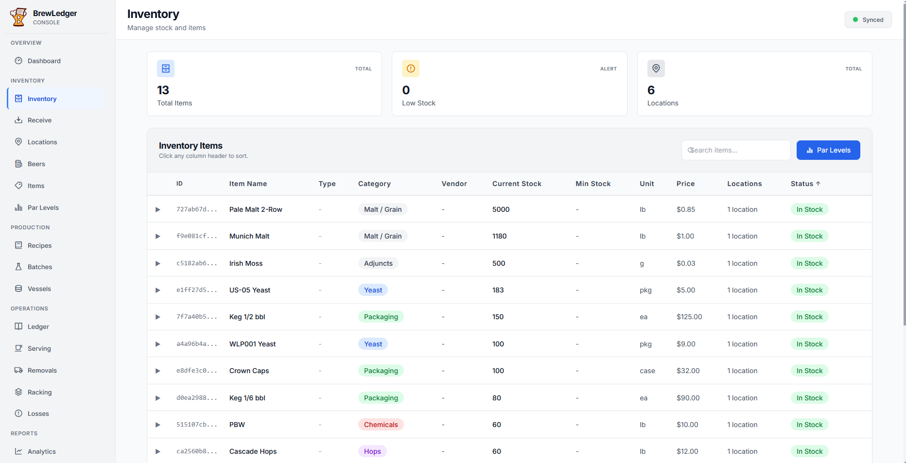
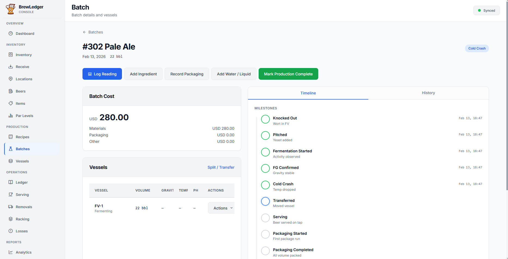

BrewLedger
Brewery operations platform with local-first sync for mobile and desktop
Technologies: Vue 3, Vite, Capacitor, Dexie/IndexedDB, Express, SQLite, Stripe
BrewLedger is a local-first brewery operations platform that integrates inventory, batch tracking, taproom serving, and TTB compliance. The mobile app handles floor operations while the desktop console manages reporting and administration. This overview details the system architecture, including the client-server split, conflict resolution in the sync protocol, and the central role of the ledger.
Executive summary
BrewLedger consists of three components: a Capacitor mobile app for iOS and Android, a Vue desktop console, and an Express API backed by SQLite. The system uses an offline-first design where IndexedDB manages local data, and the server ensures multi-device consistency upon reconnection.
Inventory movements are recorded as append-only ledger entries. To ensure performance, the UI reads from a cached on-hand count derived from this log. The sync protocol pushes pending changes and pulls server updates. It resolves conflicts using timestamps and version-based optimistic locking.
The mobile and console applications serve distinct roles. The mobile app handles floor operations such as receiving, counting, and batch monitoring. The console manages administrative tasks, including TTB compliance reporting, billing, and the AI assistant. While both share a common sync service and repository layer, the console includes additional services for desktop-specific workflows.
Master systems network
The graph below is the full component map for BrewLedger: server routes, both clients, shared data entities, auth, and external integrations. Lines are undirected — each edge means two parts connect or integrate, not a strict call direction. The ledger sits at the center; almost every operational path reads from or writes to it.
Interactive master network — pan horizontally on smaller screens. Open full-screen diagram
How the clusters interact
Server
Express is the hub. SyncRoute is the sync boundary — it validates and applies client changes to the authoritative ledger in SQLite. AuthRoutes issues tokens; BillingRoutes and StripeWebhook handle subscriptions. BreweryInfoAPI serves TTB header fields; AIChat powers the console assistant.
Mobile app
Floor workflows run in Vue views backed by repositories. Repositories read and write Dexie/IndexedDB locally, then queue changes for MobileSyncService. Capacitor wraps the same SPA for iOS and Android. Auth flows through MobileAuthService → server auth routes → token stored in session.
Console app
Same repository + sync pattern as mobile, plus desktop-only services. TTBFormService aggregates ledger, packaging, milestones, and variance data into Form 5130.9; TTBPDFExportService renders the PDF. Landing and blog are public-facing routes in the same app shell.
Data and entities
The ledger is append-only and references items, locations, and batches. OnhandCache is derived from ledger entries for fast UI reads. Batches fan out into vessel splits (BatchLocations), readings, additions, milestones, and packaging runs — each of which can produce ledger movements.
Auth and session
Tokens from the server become client sessions. Router guards on both platforms gate routes until auth resolves. Billing-gated features check subscription state after sync pulls the latest org record.
External
Stripe handles checkout, customer portal, and webhooks that update subscription status on the server (then sync to clients). TTB is the compliance output — not an API integration, but the target format for PDF export from console reporting.
Typical path: a brewer logs a receive or batch reading on mobile → repository writes a ledger entry and updates on-hand cache locally → sync pushes to SyncRoute → server persists to SQLite → other devices pull the change → console TTB services can aggregate the same ledger history into a compliance report. One write path, one source of truth, two client surfaces.
System context
Mobile and desktop users interact with separate client applications that connect to a single Express API. Stripe manages subscription billing and webhooks. TTB reporting is a primary output: the console aggregates ledger and location data to generate Form 5130.9 PDFs. The mobile app focuses on data capture to support this pipeline.

The codebase is organized into server and platform-specific directories. Both client platforms use a shared repository pattern where repositories interface with Dexie for local storage. Server-side validation mirrors client rules to maintain data integrity during synchronization.
Three surfaces, one backend
The system maintains a unified business logic across platforms. Both clients use the same API endpoints and entity schemas. The console provides management views and TTB services, while the mobile app uses Capacitor for native functionality and layouts optimized for one-handed use.
| Area | Mobile (brewledger-app) |
Console (console) |
|---|---|---|
| Primary use | Floor ops: receive, count, batch readings, serving | Management: reports, TTB PDF, bulk UI, analytics |
| Offline | Full workflow offline; sync on reconnect | Same local-first model via IndexedDB |
| TTB | Data capture: removals, milestones, location stages | TTBFormService, PDF export, brewery info API |
| Billing | Trial banner only; checkout moved to console | Stripe checkout, portal, subscription settings |
| Batch tracking | Original implementation; parity maintained | Full parity after console migration; desktop-optimized layout |
Core features such as production tracking and TTB data paths are available on both platforms. Desktop-specific features, including CSV search and QuickBooks integration, are reserved for the console to leverage larger screen space and server-side tools.
Sync and conflict resolution
Designing the sync protocol was the most significant architectural challenge. Breweries often have unreliable connectivity. The system ensures that a cellar reading logged offline and a par level adjustment made on the console both synchronize correctly, preventing duplicate entries or inconsistent vessel states.
The synchronization cycle follows a push-then-pull model. Clients batch pending changes for server validation against business rules, such as vessel exclusivity and ledger invariants. Following a successful push, the client pulls updates made since the last synchronization. Successfully processed changes are then marked as synced locally.
Conflict resolution employs a last-write-wins strategy based on timestamps, supplemented by version-based optimistic locking. In cases where timestamps are insufficient, the server's state takes precedence to maintain organization-wide consistency.

Two integrity mechanisms ensure data reliability. A unique request ID on ledger entries prevents duplicate transactions during retry attempts. Additionally, soft-delete tombstones for batch locations ensure that vessel availability remains consistent across all devices after a synchronization pull.
User Action → Ledger Entry → Cache Update → sync_status pending
↓
Sync Push → Server validate and apply → Other devices pull and applyLedger system
Inventory is managed through an append-only transaction log to ensure a complete audit trail. Every movement—such as receiving malt or transferring stock—generates a ledger entry containing the quantity, item, and location. Reversals and corrections are recorded as new entries, preserving the full history of every transaction.
The system supports various transaction types, including receipts, consumption, and transfers. An on-hand cache, derived from the ledger, ensures that inventory views and par-level checks remain performant. This cache can be recomputed from the full ledger history if necessary.

Ledger entries capture item and location names at the time of the transaction. This ensures that historical records remain accurate even if entities are renamed, which is critical for audit trails and TTB compliance.
Par levels are monitored at both the location and global levels. The system tracks these minimums to provide a clear audit trail of all movements, from initial receipt to final packaging.
Production and batch tracking
Batch tracking supports complex workflows, including splitting a single batch across multiple vessels. Brewers can record readings and additions for each vessel, manage volume transfers, and log adjustments with specific reasons for loss or serving pulls.
Production milestones include knockout, pitch, and completion. The system enforces a 'production complete' step to ensure data integrity. Upon completion, a ledger entry moves the finished beer into inventory. This provides the necessary data for TTB reporting and serving views.
Serving tanks are managed with specific occupancy rules. Each tank is associated with a serving location that can hold one finished-beer item at a time. When a batch is moved to a serving tank, the system updates the ledger and vessel status to reflect the new availability across all devices.
TTB and compliance
The system architecture is designed to support TTB Form 5130.9 reporting. Locations are categorized by stages that map directly to form columns, and ledger entries include the metadata required for detailed line-item breakdowns.
The mobile app captures operational data on the floor, which the console then aggregates to generate TTB reports. The ledger serves as the authoritative data source. This ensures that compliance forms are accurate projections of actual brewery operations.
Integrations
BrewLedger integrates with several external systems through a unified sync and authentication layer:
- Stripe: Manages subscriptions and billing through the console.
- QuickBooks: Facilitates sales order creation and item mapping.
- AWS SES: Handles transactional emails for authentication and account management.
- AI assistant (console): Processes natural language commands to perform inventory and batch actions while maintaining data integrity through the sync layer.
Screenshots
Mobile on the floor, console at the desk — same org, same sync protocol.
Mobile



Desktop console



Tech stack
- Mobile: Vue 3, Vite, Tailwind CSS, Dexie.js (IndexedDB), Capacitor 6 (iOS/Android)
- Console: Vue 3 SPA, same repository and sync layer, desktop-optimized UI components
- Server: Express.js, SQLite, Stripe API, JWT-like token auth with bcrypt
- Testing: Vitest + Supertest (backend), Vue Test Utils (frontend)
BrewLedger is a local-first system designed around an authoritative ledger. By separating mobile and desktop workflows, it aligns with the practical needs of brewery operations—providing the right tools for both the cellar and the office.